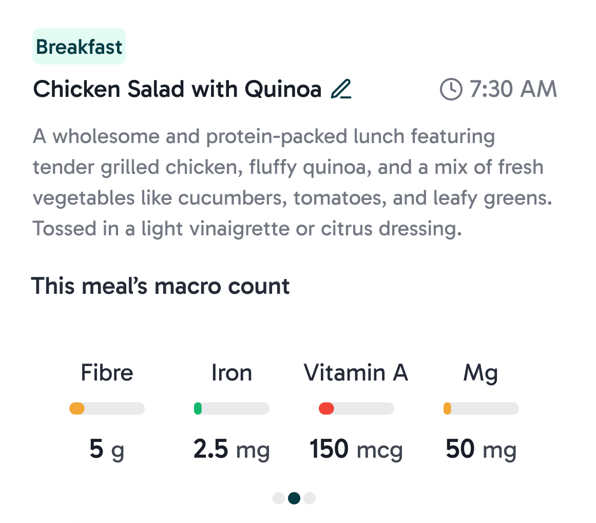
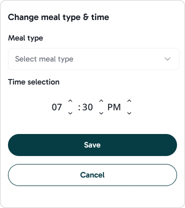

I'm Diya,
an AI-native product designer
working across interaction,
systems & research.
Currently designing at UC Berkeley IT, working on advising tools and design systems for 30,000+ students

Selected Work
Berkeley IT
Berkeley IT - 2026
Making Student Advising Easier to Navigate
Redesigning systems for 20,000+ students through AI-assisted research, interaction design, and agentic prototyping.
01
02
03
Meal
Macro
Trend



Flourish AI - 2025
AI Health Insights
Helping users uncover relationships between nutrition, symptoms, and wellness using AI.

Carbon Sustain - 2024
Making Carbon Data Actionable
Redesigned key workflows across a B2B sustainability platform, making complex emissions data easier to understand and act on.


Amazon Music - 2025
Consumer & Artist Collaboration
Top 10 finalist in an Amazon Music-sponsored designathon, exploring social discovery and interaction around live music.